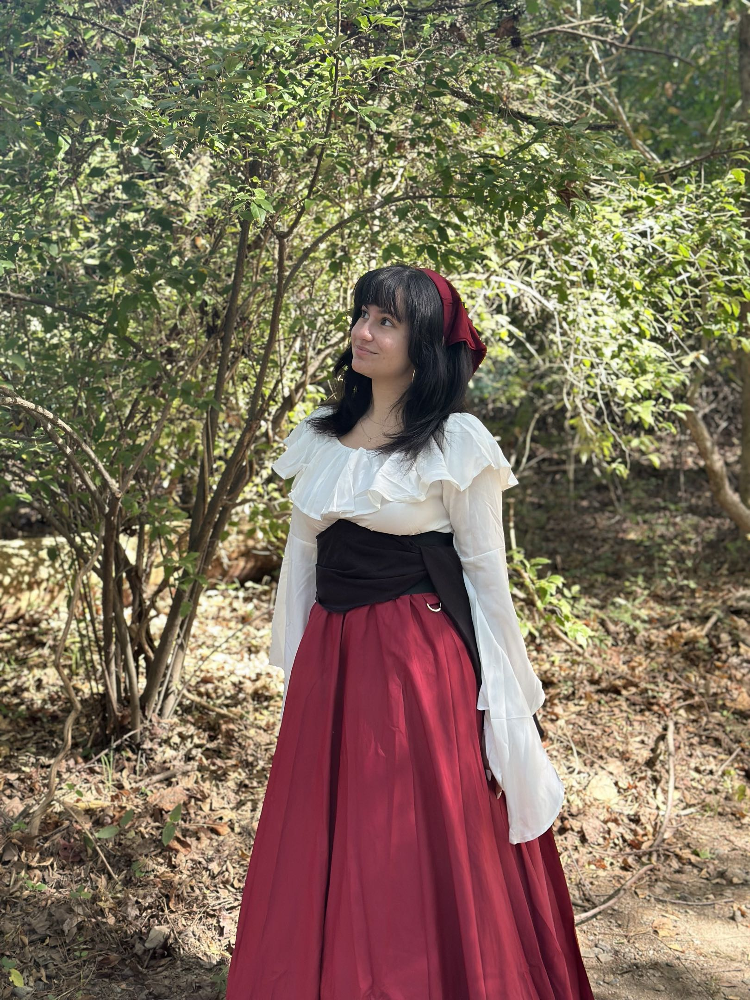

Hello! My name is Aniley Garcia. I am a senior at High Point University, majoring in Computer Science with two minors in Legal Studies and Theater. I have a passion for learning and am always eager to take on new challenges in the field of computer science. I am particularly interested in web development and cybersecurity, and I enjoy exploring how technology can be used to solve real-world problems. I am also interested in the intersection of technology and law, and I am excited to see how my studies in legal studies will complement my computer science skills in the future.
My journey started in high school where I discovered my love for computer science. I took classes where I learned how to program in Java, and from there, I knew I wanted to pursue a career in technology. I have since taken various courses in programming, data structures, and algorithms, which have helped me build a strong foundation in computer science. I have also participated in a couple of hackathons, which have allowed me to apply my skills in a collaborative environment and work on real-world projects. Not only that, but I have also published a research paper on artificial intelligence's ability to recognize and summarize Spanglish datasets during my time with Portland State University in the summer of 2025.
During my free time, I enjoy writing short stories and participating in collaborative writing projects where I can explore my ideas with like-minded writers. I also enjoy playing video games, which has sparked my interest in game development and design. Singing and dancing are another passion of mine, and I find that theater is a great outlet for expressing myself creatively and expanding my knowledge on writing engaging characters. I am also a big fan of music and enjoy attending concerts and festivals whenever I can. Overall, I am a well-rounded individual with a diverse set of interests and skills, and I am excited to see where my journey in computer science will take me in the future.